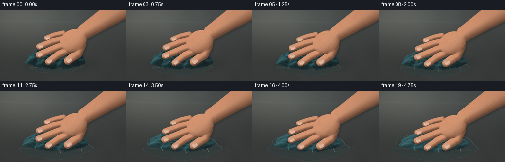
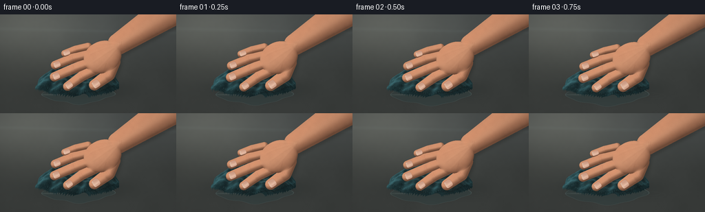

CODING AGENTS AS PIXEL WORLD MODELS
traex/GPT-6.1-Sol · mechanics_0018
点击播放 · 原生 RGB 像素
逐轮保存的候选
回放视频、检查图与代码变化。
每份候选均可单独播放。实际图片检查记录在下方工具轨迹中。
候选 01播放与检查图
点击播放 · 原生 RGB 像素


展开代码变化
--- 上一保存版本
+++ 本次保存版本
@@ -0,0 +1,303 @@
+from pathlib import Path
+import json
+import numpy as np
+from PIL import Image, ImageDraw, ImageFilter
+import artifact_io
+
+ROOT = Path(__file__).resolve().parent
+SPEC = json.loads((ROOT / 'task_spec.json').read_text())
+W,H = SPEC['width'], SPEC['height']
+S=3
+WW,HH=W*S,H*S
+Y,X=np.mgrid[0:HH,0:WW].astype(np.float32)
+X=(X+.5)/S; Y=(Y+.5)/S
+rng=np.random.default_rng(8721)
+
+def noise(w,h,scale):
+ arr=rng.random((max(2,h//scale),max(2,w//scale))).astype(np.float32)
+ return np.asarray(Image.fromarray(arr).resize((w,h),Image.Resampling.BICUBIC))-.5
+fine=noise(WW,HH,2)
+medium=noise(WW,HH,13)
+coarse=noise(WW,HH,67)
+
+def blend(im,col,alpha):
+ return im*(1-alpha[...,None])+np.asarray(col)*alpha[...,None]
+
+def gaussian(cx,cy,rx,ry):
+ return np.exp(-2*((X-cx)/rx)**2-2*((Y-cy)/ry)**2)
+
+def line_mask(points,width,blur=0):
+ m=Image.new('L',(WW,HH)); d=ImageDraw.Draw(m)
+ d.line([(round(x*S),round(y*S)) for x,y in points],fill=255,width=max(1,round(width*S)),joint='curve')
+ if blur:m=m.filter(ImageFilter.GaussianBlur(blur*S))
+ return np.asarray(m,dtype=np.float32)/255
+
+def bezier(a,b,c,d,n=60):
+ t=np.linspace(0,1,n)[:,None];return (1-t)**3*np.array(a)+3*(1-t)**2*t*np.array(b)+3*(1-t)*t*t*np.array(c)+t**3*np.array(d)
+
+# The cloth is an actual deforming sampled surface, viewed obliquely.
+# Rasterization here is just local mathematical geometry with numpy.
+NU,NV=132,90
+uu,vv=np.meshgrid(np.linspace(-1,1,NU),np.linspace(-1,1,NV))
+rr=uu*uu+vv*vv
+ang=np.arctan2(vv,uu)
+boundary=1+.046*np.sin(5*ang+.4)+.024*np.cos(9*ang)
+inside=rr<boundary**2
+ids=np.arange(NU*NV).reshape(NV,NU)
+tris=[]
+for j in range(NV-1):
+ for i in range(NU-1):
+ for vs in [(ids[j,i],ids[j,i+1],ids[j+1,i]),(ids[j+1,i],ids[j,i+1],ids[j+1,i+1])]:
+ if np.all(inside.flat[list(vs)]):tris.append(vs)
+tris=np.asarray(tris,dtype=np.int32)
+light=np.array([-.42,-.36,.83]);light/=np.linalg.norm(light)
+
+def cloth_surface(p):
+ rx=61+9*p;ry=31+3*p
+ xx=112+rx*uu
+ yy=ry*vv
+ q=np.maximum(0,1-rr/boundary**2)
+ dome=(26-15*p)*q**.56
+ # Wrinkles shift a little as the waterlogged terry pile is flattened.
+ radial=np.sqrt(rr)
+ wrinkles=(2.4-1.2*p)*(np.sin(17*uu+4*vv)+.55*np.sin(30*vv-9*uu)+.42*np.cos(29*uu+15*vv))*q**.6
+ folds=4.0*(1-.62*p)*np.sin(9*ang+3*radial)*radial**2*q**.45
+ zz=1.3+dome+wrinkles+folds
+ # The palm squeezes the central area while edges bulge out.
+ zz-= (2.5*p)*np.exp(-((uu-.16)/.6)**2-((vv+.05)/.55)**2)*q
+ zz=np.maximum(.8,zz)
+ gx=np.gradient(zz,axis=1)/(2*rx/(NU-1)); gy=np.gradient(zz,axis=0)/(2*ry/(NV-1))
+ normals=np.stack([-gx,-gy,np.ones_like(gx)],-1)
+ normals/=np.linalg.norm(normals,axis=-1,keepdims=True)
+ lam=np.maximum(0,normals@light)
+ # Cotton terry loops: small irregular paired ribs, not a flat smooth material.
+ tx=uu*rx;ty=vv*ry
+ textile=(np.sin(tx*6.6+1.1*np.sin(ty*1.7))*np.sin(ty*7.7+.5*np.sin(tx*1.9)))
+ woven=.047*textile+.025*np.sin(tx*18+ty*3)+.020*np.cos(ty*24)
+ saturation=.88+.06*np.sin(uu*9+vv*6)
+ luminosity=(.40+.63*lam+woven)*saturation
+ cloth=np.array([68,119,126])[None,None,:]*luminosity[...,None]
+ # Bright lint catches the broad window light along raised wet folds.
+ sheen=(np.maximum(0,lam-.81)**3)*105
+ cloth+=sheen[...,None]*np.array([.8,1,1.1])
+ # Cotton hem stitching along the perimeter of the bunched cloth.
+ hem=np.exp(-((radial/(boundary+.0001)-.937)/.016)**2)
+ cloth*=1-.19*hem[...,None]
+ stitch=(np.cos(ang*120)>0.30)*np.exp(-((radial/boundary-.924)/.009)**2)
+ cloth+=stitch[...,None]*np.array([14,20,20])
+ # Extra damp, dark patches retain a coherent location as compression progresses.
+ damp=np.exp(-((uu+.35)/.22)**2-((vv-.1)/.42)**2)*.14
+ cloth*=1-damp[...,None]
+ sx=xx*S;sy=(107+.56*yy-zz)*S
+ return np.stack([sx,sy],-1).reshape(-1,2),cloth.reshape(-1,3), (yy+zz*.15).reshape(-1)
+
+def raster_cloth(im,p):
+ pts,colors,depth=cloth_surface(p)
+ out=im.copy(); zb=np.full((HH,WW),-1e10,dtype=np.float32)
+ for idx in tris:
+ a,b,c=pts[idx]
+ xmin=max(0,int(np.floor(min(a[0],b[0],c[0]))));xmax=min(WW-1,int(np.ceil(max(a[0],b[0],c[0]))))
+ ymin=max(0,int(np.floor(min(a[1],b[1],c[1]))));ymax=min(HH-1,int(np.ceil(max(a[1],b[1],c[1]))))
+ if xmax<xmin or ymax<ymin:continue
+ denom=(b[1]-c[1])*(a[0]-c[0])+(c[0]-b[0])*(a[1]-c[1])
+ if abs(denom)<1e-7:continue
+ ys,xs=np.mgrid[ymin:ymax+1,xmin:xmax+1];xs=xs+.5;ys=ys+.5
+ wa=((b[1]-c[1])*(xs-c[0])+(c[0]-b[0])*(ys-c[1]))/denom
+ wb=((c[1]-a[1])*(xs-c[0])+(a[0]-c[0])*(ys-c[1]))/denom
+ wc=1-wa-wb
+ z=wa*depth[idx[0]]+wb*depth[idx[1]]+wc*depth[idx[2]]
+ sl=np.s_[ymin:ymax+1,xmin:xmax+1]
+ take=(wa>=-.0001)&(wb>=-.0001)&(wc>=-.0001)&(z>zb[sl])
+ if not np.any(take):continue
+ col=wa[...,None]*colors[idx[0]]+wb[...,None]*colors[idx[1]]+wc[...,None]*colors[idx[2]]
+ out[sl][take]=col[take];zb[sl][take]=z[take]
+ # Subpixel fiber grain provides a wet but recognizably woven surface.
+ mask=(zb>-1e9)
+ out[mask]+=fine[mask,None]*8+medium[mask,None]*2
+ return out,mask
+
+def capsule_height(a,b,r1,r2,height,zbase=0):
+ ax,ay=a;bx,by=b
+ dx=bx-ax;dy=by-ay
+ t=np.clip(((X-ax)*dx+(Y-ay)*dy)/(dx*dx+dy*dy),0,1)
+ px=ax+t*dx;py=ay+t*dy
+ r=r1+(r2-r1)*t
+ d2=((X-px)**2+(Y-py)**2)/r**2
+ q=np.maximum(0,1-d2)
+ return np.where(d2<1,zbase+height*np.sqrt(q),-1000),d2
+
+def hand_geometry(p):
+ # Modest joint extension makes the grip increasingly firm, never releasing it.
+ dy=10*p
+ def pos(a):return np.array([a[0]+1.4*p,a[1]+dy])
+ fingers=[
+ ((128,47),(110,51),(94-2*p,57),5.8,5.1),
+ ((129,58),(105,64),(80-3*p,74),7.0,6.3),
+ ((134,69),(107,79),(79-3*p,91),7.6,6.8),
+ ((141,79),(119,90),(98-2*p,105),7.7,6.5),
+ ]
+ fields=[]
+ # Wrist into broad metacarpal region; individual surfaces blend softly.
+ wrist,_=capsule_height(pos((172,43)),pos((250,-8)),15.7,24.5,15,0)
+ fields.append(wrist)
+ dx=X-pos((149,62))[0];ddy=Y-pos((149,62))[1]
+ ca=np.cos(-.42);sa=np.sin(-.42)
+ q=((dx*ca+ddy*sa)/28.3)**2+((-dx*sa+ddy*ca)/23.0)**2
+ palm=np.where(q<1,7+11*np.sqrt(np.maximum(0,1-q)),-1000)
+ fields.append(palm)
+ fingerdata=[]
+ for k,(a,b,c,r1,r2) in enumerate(fingers):
+ a,b,c=pos(a),pos(b),pos(c)
+ f,_=capsule_height(a,b,r1,r1*.96,9.3,1.6)
+ g,_=capsule_height(b,c,r1*.96,r2,7.5,1.2)
+ fields.extend([f,g]);fingerdata.append((a,b,c,r1,r2))
+ a,b,c=pos((164,69)),pos((158,88)),pos((137-2*p,103))
+ f,_=capsule_height(a,b,11,9.2,10,2);g,_=capsule_height(b,c,9.2,7.9,8,1.2)
+ fields.extend([f,g]);fingerdata.append((a,b,c,9.2,7.9))
+ stack=np.stack(fields)
+ top=stack.max(0)
+ # Smooth union removes artificial seams at the webbing of fingers.
+ sigma=1.15
+ with np.errstate(over='ignore',under='ignore'):
+ height=top+sigma*np.log(np.sum(np.exp(np.clip((stack-top)/sigma,-80,0)),axis=0))
+ mask=top>-500
+ height=np.where(mask,height,0)
+ return height,mask,fingerdata,pos
+
+
+def hand(im,p):
+ h,mask,fingers,pos=hand_geometry(p)
+ # Soft contact shadows are tightly attached to the pressing hand.
+ m=Image.fromarray((mask*255).astype('uint8'))
+ shadow=np.asarray(m.filter(ImageFilter.GaussianBlur(2.4*S)),dtype=np.float32)/255
+ shift=np.zeros_like(shadow);shift[3*S:,2*S:]=shadow[:-3*S,:-2*S]
+ im=blend(im,[32,32,29],shift*.36)
+ dhy,dhx=np.gradient(h,1/S,1/S)
+ nx=-dhx;ny=-dhy;nz=np.ones_like(nx)
+ norm=np.sqrt(nx*nx+ny*ny+1)
+ dot=np.clip((nx*-.42+ny*-.47+.78)/norm,0,1)
+ skin=np.array([197,137,103])[None,None,:]*(.55+.51*dot[...,None])
+ # Soft skin scattering and the broad photographic light source.
+ skin+=np.array([15,15,13])[None,None,:]*(np.exp(-((dot-.76)/.2)**2))[...,None]
+ pores=fine*2.7+medium*4+coarse*4
+ skin+=pores[...,None]*np.array([1.0,.72,.53])
+ skin[:,:,0]+=3
+ # Subtle tendons along back of hand, merging into its wrist.
+ for k,(a,b,c,r1,r2) in enumerate(fingers[:4]):
+ start=pos((174,43));end=a
+ pts=bezier(start,(start+end)/2+[4,-5],end+[6,-4],end,44)
+ ridge=line_mask(pts,1.5,.9)*.14
+ skin=blend(skin,[236,177,137],ridge)
+ trough=line_mask(pts+np.array([1.7,1.3]),.65,.65)*.10
+ skin=blend(skin,[130,80,57],trough)
+ for k,(a,b,c,r1,r2) in enumerate(fingers):
+ direction=(c-b);direction/=np.linalg.norm(direction)
+ normal=np.array([-direction[1],direction[0]])
+ # Two curved dorsal joint lines, not artificial black outlines.
+ for off in [-1.0,1.4]:
+ center=b+direction*off
+ pts=bezier(center-normal*r1*.67,center-normal*r1*.2+direction*1.2,center+normal*r1*.2+direction*1.2,center+normal*r1*.65,26)
+ crease=line_mask(pts,.43,.22)*(.25 if off<0 else .16)
+ skin=blend(skin,[132,83,60],crease)
+ knuckle=gaussian(b[0]-.8,b[1]-.9,r1*.65,r1*.55)*.10
+ skin=blend(skin,[213,137,111],knuckle)
+ # Short natural fingernails inset into the tip and aligned with its axis.
+ center=c-direction*3.0
+ xx=(X-center[0])*direction[0]+(Y-center[1])*direction[1]
+ yy=(X-center[0])*normal[0]+(Y-center[1])*normal[1]
+ length=5.0 if k!=4 else 5.5;width=r2*.70
+ nq=(xx/length)**4+(yy/width)**4
+ nailmask=np.clip((1-nq)*5,0,1)*mask
+ nail=np.zeros_like(skin)+np.array([204,156,133])
+ nail+=np.exp(-((yy+1.2)/2.2)**2)[...,None]*np.array([22,27,27])
+ nail+=((xx+length)/(2*length))[...,None]*np.array([8,9,9])
+ crescent=np.exp(-((xx-length*.71)/.7)**2)*.56
+ nail=blend(nail,[226,205,184],crescent)
+ rim=np.clip((1.23-nq)*6,0,1)*(1-nailmask)*mask
+ skin=blend(skin,[155,102,79],rim*.42)
+ skin=blend(skin,nail,nailmask*.93)
+ glint=np.exp(-((xx+.4)/3.4)**2-((yy+1.6)/.48)**2)*.30*nailmask
+ skin=blend(skin,[248,219,191],glint)
+ # Creases over the thumb web and two fine wrist folds.
+ for shift in [0,2.7]:
+ pts=bezier(pos((174+shift,39)),pos((172+shift,46)),pos((177+shift,52)),pos((181+shift,54)),40)
+ skin=blend(skin,[129,83,61],line_mask(pts,.45,.28)*.22)
+ pts=bezier(pos((154,71)),pos((152,78)),pos((151,83)),pos((147,87)),40)
+ skin=blend(skin,[137,87,65],line_mask(pts,.62,.45)*.30)
+ # Moisture sheen on pressing fingertip edges.
+ for a,b,c,r1,r2 in fingers:
+ glint=gaussian(c[0]-1.5,c[1]-2.0,4.4,1.0)*.18
+ skin=blend(skin,[243,218,188],glint)
+ im[mask]=np.clip(skin[mask],0,255)
+ return im
+
+
+def background(p):
+ # A slate counter and soft defocused distant wall; static, locked camera.
+ horizon=np.clip((Y-17)/65,0,1)
+ b=np.zeros((HH,WW,3),np.float32)
+ b[:]=[72,76,75]
+ b+=horizon[...,None]*np.array([-13,-14,-15])
+ glow=gaussian(35,14,145,90)
+ b+=glow[...,None]*np.array([28,27,23])
+ b+=(medium*.9+coarse*3+fine*.7)[...,None]
+ # Soft planar reflections in the counter, with restrained surface grain.
+ b+=np.exp(-((Y-21-.022*X)/2.5)**2)[...,None]*np.array([3,4,4])
+ shadow=gaussian(118,110,83+7*p,22)*.48
+ b=blend(b,[28,34,33],shadow)
+ # Thin water forced out into an irregular glossy pool around the towel.
+ dx=X-113;dy=(Y-113)/.34
+ theta=np.arctan2(dy,dx)
+ r=np.sqrt(dx*dx+dy*dy)
+ limit=51+35*p+3.5*np.sin(theta*5+.5)+2*np.sin(theta*9)
+ water=np.clip((limit-r)*1.1,0,1)
+ b=blend(b,[50,65,65],water*.52)
+ gleam=np.exp(-((r-limit+1.0)/.72)**2)*water
+ gleam*=.3+.7*np.maximum(0,np.cos(theta+1.3))
+ b=blend(b,[165,185,180],gleam*.42)
+ b=blend(b,[114,129,125],gaussian(75,117,33+15*p,1.2)*water*.26)
+ # Slow expanding ripples and trickles remain grounded on the countertop.
+ for k in range(3):
+ cx=176+3*k;cy=115+2*k
+ rad=2+(p*14+k*3)%17
+ ell=np.sqrt(((X-cx)/1.5)**2+((Y-cy)/.36)**2)
+ ripple=np.exp(-((ell-rad)/.37)**2)*.13*p
+ b=blend(b,[160,175,169],ripple)
+ for k,(cx,cy,rrr) in enumerate([(42,114,1.3),(190,122,1.5),(64,132,1.4),(201,114,1.0),(164,135,1.4),(77,126,.8)]):
+ birth=.16+k*.09
+ grow=np.clip((p-birth)*5,0,1)
+ if grow>0:
+ d=((X-cx)/(rrr*grow))**2+((Y-cy)/(rrr*.52*grow))**2
+ dm=np.clip((1-d)*5,0,1)
+ b=blend(b,[39,58,60],dm*.7)
+ hi=np.exp(-((X-cx+.35)/(.5*rrr))**2-((Y-cy+.28)/.27)**2)*dm
+ b=blend(b,[188,205,200],hi*.62)
+ return b
+
+
+def frame(t):
+ # Accelerated real-time compression: pressure builds monotonically.
+ p=(t/19)**.85
+ im=background(p)
+ im,cm=raster_cloth(im,p)
+ # Squeezed water follows the visible front folds down to the spreading pool.
+ for k,(xx,yy) in enumerate([(72,116),(121,121),(165,118)]):
+ strength=np.clip((p-.21-k*.07)*2,0,.67)
+ if strength>0:
+ pts=bezier((xx,yy-3),(xx-1,yy),(xx+1,yy+1.8),(xx+1.6,yy+3+p*2),32)
+ im=blend(im,[107,153,154],line_mask(pts,.55,.22)*strength)
+ im=blend(im,[202,221,211],line_mask(pts+[-.4,0],.2,.14)*strength*.45)
+ im=hand(im,p)
+ # Gentle optical vignette and high-quality area reduction.
+ vign=1-.12*np.clip(((X-132)/169)**2+((Y-75)/125)**2,0,1)
+ im*=vign[...,None]
+ return np.asarray(Image.fromarray(np.uint8(np.clip(im,0,255))).resize((W,H),Image.Resampling.LANCZOS))
+
+if __name__=='__main__':
+ frames=[]
+ for n in range(SPEC['frames']):
+ frames.append(frame(n))
+ print(f'Frame {n+1}/{SPEC["frames"]}',flush=True)
+ frames=np.stack(frames).astype(np.uint8)
+ artifact_io.save(frames, ROOT)
+ print('Saved RGB video artifacts.',flush=True)
可观测工具轨迹
实际执行的命令与返回图片。
命令 1exit 0
/bin/bash -lc 'ls -la && cat prompt.txt && cat GENERATION_RULES.md && cat task_spec.json'
命令 2exit 0
/bin/bash -lc "cat artifact_io.py && cat player_template.html | head -20; python - <<'PY' import numpy, PIL print(numpy.__version__, PIL.__version__) PY"
命令 3exit 0
/bin/bash -lc "cat > generate.py <<'PY'
from pathlib import Path
import json
import numpy as np
from PIL import Image, ImageDraw, ImageFilter
import artifact_io
ROOT = Path(__file__).resolve().parent
SPEC = json.loads((ROOT / 'task_spec.json').read_text())
W,H = SPEC['width'], SPEC['height']
S=3
WW,HH=W*S,H*S
Y,X=np.mgrid[0:HH,0:WW].astype(np.float32)
X=(X+.5)/S; Y=(Y+.5)/S
rng=np.random.default_rng(8721)
def noise(w,h,scale):
arr=rng.random((max(2,h//scale),max(2,w//scale))).astype(np.float32)
return np.asarray(Image.fromarray(arr).resize((w,h),Image.Resampling.BICUBIC))-.5
fine=noise(WW,HH,2)
medium=noise(WW,HH,13)
coarse=noise(WW,HH,67)
def blend(im,col,alpha):
return im*(1-alpha[...,None])+np.asarray(col)*alpha[...,None]
def gaussian(cx,cy,rx,ry):
return np.exp(-2*((X-cx)/rx)**2-2*((Y-cy)/ry)**2)
def line_mask(points,width,blur=0):
m=Image.new('L',(WW,HH)); d=ImageDraw.Draw(m)
d.line([(round(x*S),round(y*S)) for x,y in points],fill=255,width=max(1,round(width*S)),joint='curve')
if blur:m=m.filter(ImageFilter.GaussianBlur(blur*S))
return np.asarray(m,dtype=np.float32)/255
def bezier(a,b,c,d,n=60):
t=np.linspace(0,1,n)[:,None];return (1-t)**3*np.array(a)+3*(1-t)**2*t*np.array(b)+3*(1-t)*t*t*np.array(c)+t**3*np.array(d)
# The cloth is an actual deforming sampled surface, viewed obliquely.
# Rasterization here is just local mathematical geometry with numpy.
NU,NV=132,90
uu,vv=np.meshgrid(np.linspace(-1,1,NU),np.linspace(-1,1,NV))
rr=uu*uu+vv*vv
ang=np.arctan2(vv,uu)
boundary=1+.046*np.sin(5*ang+.4)+.024*np.cos(9*ang)
inside=rr<boundary**2
ids=np.arange(NU*NV).reshape(NV,NU)
tris=[]
for j in range(NV-1):
for i in range(NU-1):
for vs in [(ids[j,i],ids[j,i+1],ids[j+1,i]),(ids[j+1,i],ids[j,i+1],ids[j+1,i+1])]:
if np.all(inside.flat[list(vs)]):tris.append(vs)
tris=np.asarray(tris,dtype=np.int32)
light=np.array([-.42,-.36,.83]);light/=np.linalg.norm(light)
def cloth_surface(p):
rx=61+9*p;ry=31+3*p
xx=112+rx*uu
yy=ry*vv
q=np.maximum(0,1-rr/boundary**2)
dome=(26-15*p)*q**.56
# Wrinkles shift a little as the waterlogged terry pile is flattened.
radial=np.sqrt(rr)
wrinkles=(2.4-1.2*p)*(np.sin(17*uu+4*vv)+.55*np.sin(30*vv-9*uu)+.42*np.cos(29*uu+15*vv))*q**.6
folds=4.0*(1-.62*p)*np.sin(9*ang+3*radial)*radial**2*q**.45
zz=1.3+dome+wrinkles+folds
# The palm squeezes the central area while edges bulge out.
zz-= (2.5*p)*np.exp(-((uu-.16)/.6)**2-((vv+.05)/.55)**2)*q
zz=np.maximum(.8,zz)
gx=np.gradient(zz,axis=1)/(2*rx/(NU-1)); gy=np.gradient(zz,axis=0)/(2*ry/(NV-1))
normals=np.stack([-gx,-gy,np.ones_like(gx)],-1)
normals/=np.linalg.norm(normals,axis=-1,keepdims=True)
lam=np.maximum(0,normals@light)
# Cotton terry loops: small irregular paired ribs, not a flat smooth material.
tx=uu*rx;ty=vv*ry
textile=(np.sin(tx*6.6+1.1*np.sin(ty*1.7))*np.sin(ty*7.7+.5*np.sin(tx*1.9)))
woven=.047*textile+.025*np.sin(tx*18+ty*3)+.020*np.cos(ty*24)
saturation=.88+.06*np.sin(uu*9+vv*6)
luminosity=(.40+.63*lam+woven)*saturation
cloth=np.array([68,119,126])[None,None,:]*luminosity[...,None]
# Bright lint catches the broad window light along raised wet folds.
sheen=(np.maximum(0,lam-.81)**3)*105
cloth+=sheen[...,None]*np.array([.8,1,1.1])
# Cotton hem stitching along the perimeter of the bunched cloth.
hem=np.exp(-((radial/(boundary+.0001)-.937)/.016)**2)
cloth*=1-.19*hem[...,None]
stitch=(np.cos(ang*120)>0.30)*np.exp(-((radial/boundary-.924)/.009)**2)
cloth+=stitch[...,None]*np.array([14,20,20])
# Extra damp, dark patches retain a coherent location as compression progresses.
damp=np.exp(-((uu+.35)/.22)**2-((vv-.1)/.42)**2)*.14
cloth*=1-damp[...,None]
sx=xx*S;sy=(107+.56*yy-zz)*S
return np.stack([sx,sy],-1).reshape(-1,2),cloth.reshape(-1,3), (yy+zz*.15).reshape(-1)
def raster_cloth(im,p):
pts,colors,depth=cloth_surface(p)
out=im.copy(); zb=np.full((HH,WW),-1e10,dtype=np.float32)
for idx in tris:
a,b,c=pts[idx]
xmin=max(0,int(np.floor(min(a[0],b[0],c[0]))));xmax=min(WW-1,int(np.ceil(max(a[0],b[0],c[0]))))
ymin=max(0,int(np.floor(min(a[1],b[1],c[1]))));ymax=min(HH-1,int(np.ceil(max(a[1],b[1],c[1]))))
if xmax<xmin or ymax<ymin:continue
denom=(b[1]-c[1])*(a[0]-c[0])+(c[0]-b[0])*(a[1]-c[1])
if abs(denom)<1e-7:continue
ys,xs=np.mgrid[ymin:ymax+1,xmin:xmax+1];xs=xs+.5;ys=ys+.5
wa=((b[1]-c[1])*(xs-c[0])+(c[0]-b[0])*(ys-c[1]))/denom
wb=((c[1]-a[1])*(xs-c[0])+(a[0]-c[0])*(ys-c[1]))/denom
wc=1-wa-wb
z=wa*depth[idx[0]]+wb*depth[idx[1]]+wc*depth[idx[2]]
sl=np.s_[ymin:ymax+1,xmin:xmax+1]
take=(wa>=-.0001)&(wb>=-.0001)&(wc>=-.0001)&(z>zb[sl])
if not np.any(take):continue
col=wa[...,None]*colors[idx[0]]+wb[...,None]*colors[idx[1]]+wc[...,None]*colors[idx[2]]
out[sl][take]=col[take];zb[sl][take]=z[take]
# Subpixel fiber grain provides a wet but recognizably woven surface.
mask=(zb>-1e9)
out[mask]+=fine[mask,None]*8+medium[mask,None]*2
return out,mask
def capsule_height(a,b,r1,r2,height,zbase=0):
ax,ay=a;bx,by=b
dx=bx-ax;dy=by-ay
t=np.clip(((X-ax)*dx+(Y-ay)*dy)/(dx*dx+dy*dy),0,1)
px=ax+t*dx;py=ay+t*dy
r=r1+(r2-r1)*t
d2=((X-px)**2+(Y-py)**2)/r**2
q=np.maximum(0,1-d2)
return np.where(d2<1,zbase+height*np.sqrt(q),-1000),d2
def hand_geometry(p):
# Modest joint extension makes the grip increasingly firm, never releasing it.
dy=10*p
def pos(a):return np.array([a[0]+1.4*p,a[1]+dy])
fingers=[
((128,47),(110,51),(94-2*p,57),5.8,5.1),
((129,58),(105,64),(80-3*p,74),7.0,6.3),
((134,69),(107,79),(79-3*p,91),7.6,6.8),
((141,79),(119,90),(98-2*p,105),7.7,6.5),
]
fields=[]
# Wrist into broad metacarpal region; individual surfaces blend softly.
wrist,_=capsule_height(pos((172,43)),pos((250,-8)),15.7,24.5,15,0)
fields.append(wrist)
dx=X-pos((149,62))[0];ddy=Y-pos((149,62))[1]
ca=np.cos(-.42);sa=np.sin(-.42)
q=((dx*ca+ddy*sa)/28.3)**2+((-dx*sa+ddy*ca)/23.0)**2
palm=np.where(q<1,7+11*np.sqrt(np.maximum(0,1-q)),-1000)
fields.append(palm)
fingerdata=[]
for k,(a,b,c,r1,r2) in enumerate(fingers):
a,b,c=pos(a),pos(b),pos(c)
f,_=capsule_height(a,b,r1,r1*.96,9.3,1.6)
g,_=capsule_height(b,c,r1*.96,r2,7.5,1.2)
fields.extend([f,g]);fingerdata.append((a,b,c,r1,r2))
a,b,c=pos((164,69)),pos((158,88)),pos((137-2*p,103))
f,_=capsule_height(a,b,11,9.2,10,2);g,_=capsule_height(b,c,9.2,7.9,8,1.2)
fields.extend([f,g]);fingerdata.append((a,b,c,9.2,7.9))
stack=np.stack(fields)
top=stack.max(0)
# Smooth union removes artificial seams at the webbing of fingers.
sigma=1.15
with np.errstate(over='ignore',under='ignore'):
height=top+sigma*np.log(np.sum(np.exp(np.clip((stack-top)/sigma,-80,0)),axis=0))
mask=top>-500
height=np.where(mask,height,0)
return height,mask,fingerdata,pos
def hand(im,p):
h,mask,fingers,pos=hand_geometry(p)
# Soft contact shadows are tightly attached to the pressing hand.
m=Image.fromarray((mask*255).astype('uint8'))
shadow=np.asarray(m.filter(ImageFilter.GaussianBlur(2.4*S)),dtype=np.float32)/255
shift=np.zeros_like(shadow);shift[3*S:,2*S:]=shadow[:-3*S,:-2*S]
im=blend(im,[32,32,29],shift*.36)
dhy,dhx=np.gradient(h,1/S,1/S)
nx=-dhx;ny=-dhy;nz=np.ones_like(nx)
norm=np.sqrt(nx*nx+ny*ny+1)
dot=np.clip((nx*-.42+ny*-.47+.78)/norm,0,1)
skin=np.array([197,137,103])[None,None,:]*(.55+.51*dot[...,None])
# Soft skin scattering and the broad photographic light source.
skin+=np.array([15,15,13])[None,None,:]*(np.exp(-((dot-.76)/.2)**2))[...,None]
pores=fine*2.7+medium*4+coarse*4
skin+=pores[...,None]*np.array([1.0,.72,.53])
skin[:,:,0]+=3
# Subtle tendons along back of hand, merging into its wrist.
for k,(a,b,c,r1,r2) in enumerate(fingers[:4]):
start=pos((174,43));end=a
pts=bezier(start,(start+end)/2+[4,-5],end+[6,-4],end,44)
ridge=line_mask(pts,1.5,.9)*.14
skin=blend(skin,[236,177,137],ridge)
trough=line_mask(pts+np.array([1.7,1.3]),.65,.65)*.10
skin=blend(skin,[130,80,57],trough)
for k,(a,b,c,r1,r2) in enumerate(fingers):
direction=(c-b);direction/=np.linalg.norm(direction)
normal=np.array([-direction[1],direction[0]])
# Two curved dorsal joint lines, not artificial black outlines.
for off in [-1.0,1.4]:
center=b+direction*off
pts=bezier(center-normal*r1*.67,center-normal*r1*.2+direction*1.2,center+normal*r1*.2+direction*1.2,center+normal*r1*.65,26)
crease=line_mask(pts,.43,.22)*(.25 if off<0 else .16)
skin=blend(skin,[132,83,60],crease)
knuckle=gaussian(b[0]-.8,b[1]-.9,r1*.65,r1*.55)*.10
skin=blend(skin,[213,137,111],knuckle)
# Short natural fingernails inset into the tip and aligned with its axis.
center=c-direction*3.0
xx=(X-center[0])*direction[0]+(Y-center[1])*direction[1]
yy=(X-center[0])*normal[0]+(Y-center[1])*normal[1]
length=5.0 if k"'!=4 else 5.5;width=r2*.70
nq=(xx/length)**4+(yy/width)**4
nailmask=np.clip((1-nq)*5,0,1)*mask
nail=np.zeros_like(skin)+np.array([204,156,133])
nail+=np.exp(-((yy+1.2)/2.2)**2)[...,None]*np.array([22,27,27])
nail+=((xx+length)/(2*length))[...,None]*np.array([8,9,9])
crescent=np.exp(-((xx-length*.71)/.7)**2)*.56
nail=blend(nail,[226,205,184],crescent)
rim=np.clip((1.23-nq)*6,0,1)*(1-nailmask)*mask
skin=blend(skin,[155,102,79],rim*.42)
skin=blend(skin,nail,nailmask*.93)
glint=np.exp(-((xx+.4)/3.4)**2-((yy+1.6)/.48)**2)*.30*nailmask
skin=blend(skin,[248,219,191],glint)
# Creases over the thumb web and two fine wrist folds.
for shift in [0,2.7]:
pts=bezier(pos((174+shift,39)),pos((172+shift,46)),pos((177+shift,52)),pos((181+shift,54)),40)
skin=blend(skin,[129,83,61],line_mask(pts,.45,.28)*.22)
pts=bezier(pos((154,71)),pos((152,78)),pos((151,83)),pos((147,87)),40)
skin=blend(skin,[137,87,65],line_mask(pts,.62,.45)*.30)
# Moisture sheen on pressing fingertip edges.
for a,b,c,r1,r2 in fingers:
glint=gaussian(c[0]-1.5,c[1]-2.0,4.4,1.0)*.18
skin=blend(skin,[243,218,188],glint)
im[mask]=np.clip(skin[mask],0,255)
return im
def background(p):
# A slate counter and soft defocused distant wall; static, locked camera.
horizon=np.clip((Y-17)/65,0,1)
b=np.zeros((HH,WW,3),np.float32)
b[:]=[72,76,75]
b+=horizon[...,None]*np.array([-13,-14,-15])
glow=gaussian(35,14,145,90)
b+=glow[...,None]*np.array([28,27,23])
b+=(medium*.9+coarse*3+fine*.7)[...,None]
# Soft planar reflections in the counter, with restrained surface grain.
b+=np.exp(-((Y-21-.022*X)/2.5)**2)[...,None]*np.array([3,4,4])
shadow=gaussian(118,110,83+7*p,22)*.48
b=blend(b,[28,34,33],shadow)
# Thin water forced out into an irregular glossy pool around the towel.
dx=X-113;dy=(Y-113)/.34
theta=np.arctan2(dy,dx)
r=np.sqrt(dx*dx+dy*dy)
limit=51+35*p+3.5*np.sin(theta*5+.5)+2*np.sin(theta*9)
water=np.clip((limit-r)*1.1,0,1)
b=blend(b,[50,65,65],water*.52)
gleam=np.exp(-((r-limit+1.0)/.72)**2)*water
gleam*=.3+.7*np.maximum(0,np.cos(theta+1.3))
b=blend(b,[165,185,180],gleam*.42)
b=blend(b,[114,129,125],gaussian(75,117,33+15*p,1.2)*water*.26)
# Slow expanding ripples and trickles remain grounded on the countertop.
for k in range(3):
cx=176+3*k;cy=115+2*k
rad=2+(p*14+k*3)%17
ell=np.sqrt(((X-cx)/1.5)**2+((Y-cy)/.36)**2)
ripple=np.exp(-((ell-rad)/.37)**2)*.13*p
b=blend(b,[160,175,169],ripple)
for k,(cx,cy,rrr) in enumerate([(42,114,1.3),(190,122,1.5),(64,132,1.4),(201,114,1.0),(164,135,1.4),(77,126,.8)]):
birth=.16+k*.09
grow=np.clip((p-birth)*5,0,1)
if grow>0:
d=((X-cx)/(rrr*grow))**2+((Y-cy)/(rrr*.52*grow))**2
dm=np.clip((1-d)*5,0,1)
b=blend(b,[39,58,60],dm*.7)
hi=np.exp(-((X-cx+.35)/(.5*rrr))**2-((Y-cy+.28)/.27)**2)*dm
b=blend(b,[188,205,200],hi*.62)
return b
def frame(t):
# Accelerated real-time compression: pressure builds monotonically.
p=(t/19)**.85
im=background(p)
im,cm=raster_cloth(im,p)
# Squeezed water follows the visible front folds down to the spreading pool.
for k,(xx,yy) in enumerate([(72,116),(121,121),(165,118)]):
strength=np.clip((p-.21-k*.07)*2,0,.67)
if strength>0:
pts=bezier((xx,yy-3),(xx-1,yy),(xx+1,yy+1.8),(xx+1.6,yy+3+p*2),32)
im=blend(im,[107,153,154],line_mask(pts,.55,.22)*strength)
im=blend(im,[202,221,211],line_mask(pts+[-.4,0],.2,.14)*strength*.45)
im=hand(im,p)
# Gentle optical vignette and high-quality area reduction.
vign=1-.12*np.clip(((X-132)/169)**2+((Y-75)/125)**2,0,1)
im*=vign[...,None]
return np.asarray(Image.fromarray(np.uint8(np.clip(im,0,255))).resize((W,H),Image.Resampling.LANCZOS))
if __name__=='"'__main__':
frames=[]
for n in range(SPEC['frames']):
frames.append(frame(n))
print(f'Frame {n+1}/{SPEC[\"frames\"]}',flush=True)
frames=np.stack(frames).astype(np.uint8)
artifact_io.save(frames, ROOT)
print('Saved RGB video artifacts.',flush=True)
PY
python generate.py"命令 4exit 1
/bin/bash -lc "python - <<'PY'
from pathlib import Path
import numpy as np
from PIL import Image
p=Path('.')
f=sorted((p/'frames').glob('*.png'))
a=np.stack([np.array(Image.open(x)) for x in f])
assert a.shape==(20,144,256,3) and a.dtype==np.uint8
z=np.load('pixels.npz')['pixels']; assert z.shape==(144,256,20)
print('Validated:',a.shape, a.dtype)
print('Mean frame-to-frame change:',np.abs(np.diff(a.astype(float),axis=0)).mean())
print('Artifacts:', ', '.join(x.name for x in [p/'pixels.npz',p/'index.html',p/'inspection.png',p/'transition_check.png'] if x.is_file()))
PY
command -v ffmpeg"保存候选 1 份；完成命令 4 次；可验证图片返回 0 张。原始 API 响应与完整日志保留在本地。